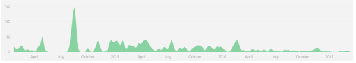

Pour terminer sur ce panorama concernant XGBoost, nous allons tenter de répondre à la question suivante : « XGBoost est-elle une solution vouée à perdurer? ».
Tout d'abord, comme nous l'avons vu, XGBoost est une méthode récente, dont la première implémentation remonte à trois ans. Nous avons cependant mis en avant le fait que cet algorithme a très vite été porté sur les principales plateformes et langages de Machine Learning. Il s'agit ainsi d'un premier point en faveur d'une perrenité de XGBoost, la méthode a été unanimement reconnue comme utile dans la communauté des
data scientists qui ont investi du temps pour l'intégrer à leurs écosystème. La finalisation de point étant en particulier un interfaçage complet avec le framework Haddop via une API unifiée JAVA/Scala.
Dans un second temps, nous avons également vu que même si les entreprises restent discrètes sur le sujet, des personnes ayant connaissance (et maîtrisant) XGBoost commencent à être recherchées par ces dernières. Ainsi, L'ancrage de XGBoost dans l'industrie est en train de s'opérer, ce qui est facteur très encourageant pour sa survie.
Enfin, les performances permises tant du point de vue des résultats en prédiction que des temps de calculs font de cette solution une méthode compétitive, y compris vis-à-vis des méthodes déjà bien implantées comme les Random Forest.
Tous ces éléments tendent à penser que XGBoost n'est pas qu'un « effet de mode », mais une méthode qui devrait s'installer durablement dans le domaine du Machine Learning, comme l'ont fait auparavant les Random Forest, les SVM,...Cependant, cette richesse a un coût, avec un algorithme demandant une certaine expertise dans sa configuration.
Pour terminer, nous pouvons également avancer que les développements « bruts » de XGBoost arrivent à un degré de maturité importants, et se font donc moins importants. Ceci peut se voir dans le graphe de commits de la page Github de XGBoost, où on remarque que le volume de commits reste faible depuis un peu plus six mois, signe de la maturité du projet, qui est désormais de plus en plus intégré dans les plateformes, mais avec un code initial stable. Ce graphe vous est proposé à la Figure 20.

Fig. 20
Évolution du nombre de commits sur la page Github de XGBoostn établi en mars 2017